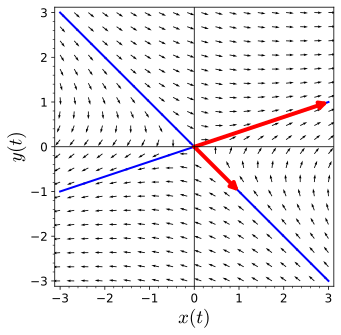
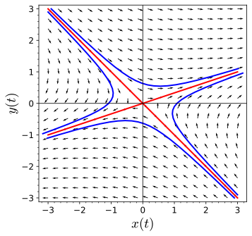
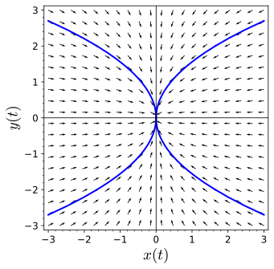
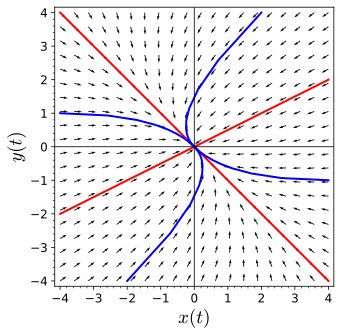
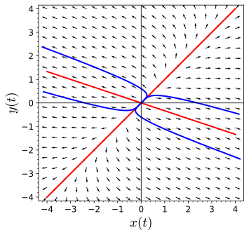

To understand that given a system of linear differential equations
\begin{equation*}
\begin{pmatrix}
dx/dt \\ dy/dt
\end{pmatrix}
=
\begin{pmatrix}
a & b \\
c & d
\end{pmatrix}
\begin{pmatrix}
x \\ y
\end{pmatrix}
=
A
\begin{pmatrix}
x \\ y
\end{pmatrix},
\end{equation*}
with distinct real eigenvalues, we can classify the origin as sink, saddle, or source depending on the signs of the eigenvalues.
In Section 3.2, we learned how to solve the system
\begin{equation*}
\begin{pmatrix}
dx/dt \\ dy/dt
\end{pmatrix}
=
\begin{pmatrix}
a & b \\
c & d
\end{pmatrix}
\begin{pmatrix}
x \\ y
\end{pmatrix}
=
A
\begin{pmatrix}
x \\ y
\end{pmatrix}
\end{equation*}
provided the system has distinct real eigenvalues. If \(A\) has distinct real eigenvalues \(\lambda\) and \(\mu\) with eigenvectors \(\mathbf u\) and \(\mathbf v\text{,}\) respectively, then the general solution of the system is
\begin{equation*}
\mathbf x(t) = c_1 e^{\lambda t} \mathbf u + c_2 e^{\mu t} \mathbf v.
\end{equation*}
Furthermore, we can use the general solution of such a system to find the straight-line solutions to the system. If \(c_2 = 0\text{,}\) then all solutions will lie along the line in the \(xy\)-plane that contains the vector \(\mathbf u\text{.}\) Similarly, if \(c_1 = 0\text{,}\) then all solutions will lie along the line in the \(xy\)-plane that contains the vector \(\mathbf v\text{.}\)
Subsection3.3.1The Case \(\lambda_1 \lt 0 \lt \lambda_2\)
The eigenvalues of \(A\) are \(\lambda = -2\) or \(\lambda = 2\) with eigenvectors \(\mathbf u = (1, -1)\) and \(\mathbf v = (3,1)\text{,}\) respectively. Therefore, the straight-line solutions must be lines containing \(\mathbf u\) and \(\mathbf v\) (Figure 3.3.2).

Figure3.3.2.Straight-line solutions
Let us consider the special case of the system \({\mathbf x}' = A {\mathbf x}\text{,}\) where \(\lambda_1 \lt 0 \lt \lambda_2\) and
we already know how to find the solutions. However, in keeping with the spirit of our investigation, we will find the eigenvalues of \(A\text{.}\) The characteristic equation of \(A\) is
and our eigenvalues are \(\lambda_1\) and \(\lambda_2\text{.}\) It is easy to see that we can associate eigenvectors \((1,0)\) and \((0, 1)\) to \(\lambda_1\) and \(\lambda_2\text{,}\) respectively. Thus, our general solution is
Since \(\lambda_1 \lt 0\text{,}\) the straight-line solutions of the form \(c_1 e^{\lambda_1 t} (1, 0)\) lie on the \(x\)-axis. These solutions approach zero as \(t \to \infty\text{.}\) On the other hand, the solutions \(c_2 e^{\lambda_2 t} (0, 1)\) lie on the \(y\)-axis and approach infinity as \(t \to \infty\text{.}\) The \(x\)-axis is a stable line of solutions, while the \(y\)-axis is an unstable line of solutions. All other solutions
(with \(c_1, c_2 \neq 0\)) tend to infinity in the direction of the unstable line, since \({\mathbf x}(t)\) approaches \((0, c_2 e^{\lambda_2 t} )\) as \(t \to \infty\text{.}\) The phase portrait for the system
\begin{align*}
x' & = -x\\
y' & = y
\end{align*}
is given in Figure 3.3.3. The equilibrium point of such systems is called a saddle.
In general, a straight-line solution is called a stable line of solutions if all solutions approach \((0,0)\text{.}\) A straight-line solution is called an unstable line if all of the non-zero solutions approach infinity.
and each solution on this line approaches the origin as \(t \to \infty\text{.}\) By the Principle of Superposition, the general solution to the system is
If \(c_1 \neq 0\text{,}\) we have \({\mathbf x}(t) \to {\mathbf x}_1(t)\) as \(t \to \infty\text{.}\) If \(c_2 \neq 0\text{,}\) we have \({\mathbf x}(t) \to {\mathbf x}_2(t)\) as \(t \to -\infty\text{.}\) Thus, we have the phase portrait in Figure 3.3.5.

Figure3.3.5.Saddle phase portrait
For the general case, where \(A\) has eigenvalues \(\lambda_1 \lt 0 \lt \lambda_2\text{,}\) we always have a stable line of solutions and an unstable line of solutions. All other solutions approach the unstable line as \(t \to \infty\) and the stable line as \(t \to - \infty\text{.}\)
Activity3.3.1.Planar Systems with Eigenvalues of Different Signs.
Consider the system \(d\mathbf x/dt = A \mathbf x\text{,}\) where
Find the eigenvalues of \(A\text{.}\) You should find distinct real eigenvalues \(\lambda\) and \(\mu\text{.}\)
(b)
Find eigenvectors \(\mathbf v_1\) and \(\mathbf v_2\) for the eigenvalues \(\lambda\) and \(\mu\text{,}\) respectively.
(c)
Find the straight-line solutions of \(d\mathbf x/dt = A \mathbf x\text{.}\) Plot the solutions in the \(xy\)-plane.
(d)
Sketch several solution curves for the system \(d\mathbf x/dt = A \mathbf x\text{.}\) What do you notice about the solution curves, especially with respect to the straight-line solutions?
Subsection3.3.2The Case \(\lambda_1 \lt \lambda_2 \lt 0\)
Suppose \(\lambda_1 \lt \lambda_2 \lt 0\) and consider the diagonal system
but unlike the case of the saddle, all solutions tend towards the origin as \(t \to \infty\text{.}\) To see how the solutions approach the origin, we will compute \(dy/dx\) for \(c_2 \neq 0\text{.}\) If
Since \(\lambda_2 - \lambda_1 \gt 0\text{,}\) the derivative, \(dy/dx\text{,}\) must approach \(\pm \infty\text{,}\) provided \(c_2 \neq 0\text{.}\) Therefore, the solutions tend towards the origin tangentially to the \(y\)-axis (Figure 3.3.6). We say that the equilibrium point for this system is a sink.

Figure3.3.6.Sink phase portrait
Since \(\lambda_1 \lt \lambda_2 \lt 0\text{,}\) we say that \(\lambda_1\) is the dominant eigenvalue. The \(x\)-coordinates of the solutions approach the origin much faster than the \(y\)-coordinates.
To see what happens in the general case, suppose that \(\lambda_1 \lt \lambda_2 \lt 0\text{,}\) the eigenvectors associated with \(\lambda_1\) and \(\lambda_2\) are \((u_1, u_2)\) and \((v_1, v_2)\text{,}\) respectively. The general solution of our system is
This last expression tends toward the slope \(v_2/v_1\) of the eigenvector of \(\lambda_2\) (unless \(c_2 = 0\)). If \(c_2 = 0\text{,}\) then we have the straight-line solution corresponding to the eigenvalue \(\lambda_1\text{.}\) Hence, all the solutions for this case (except those on the straight-line belonging to the dominant eigenvalue) tend toward the origin tangentially to the straight-line solution corresponding to the weaker eigenvalue, \(\lambda_2\text{.}\)
The eigenvalues of this system are \(\lambda_1 = -6\) and \(\lambda_2 = -3\) with eigenvectors \(\mathbf v_1 = (2,1 )\) and \(\mathbf v_2 = (1, -1)\text{,}\) respectively. Since the dominant eigenvalue is \(\lambda_1 = -6\text{,}\) solutions tend towards the straight-line solution containing the vector \(\mathbf v_1 = (2,1 )\) more quickly (Figure 3.3.8).

Figure3.3.8.Sink phase portrait
Activity3.3.2.Planar Systems with Two Negative Eigenvalues.
Consider the system \(d\mathbf x/dt = A \mathbf x\text{,}\) where
Find the eigenvalues of \(A\text{.}\) You should find distinct real eigenvalues \(\lambda\) and \(\mu\text{.}\)
(b)
Find eigenvectors \(\mathbf v_1\) and \(\mathbf v_2\) for the eigenvalues \(\lambda\) and \(\mu\text{,}\) respectively.
(c)
Find the straight-line solutions of \(d\mathbf x/dt = A \mathbf x\text{.}\) Plot the solutions in the \(xy\)-plane.
(d)
Sketch several solution curves for the system \(d\mathbf x/dt = A \mathbf x\text{.}\) What do you notice about the solution curves, especially with respect to the straight-line solutions?
(e)
Which of the two eigenvalues is the dominant eigenvalue? Why?
Subsection3.3.3The Case \(\lambda_1 \gt \lambda_2 \gt 0\)
If \(\lambda_1 \gt \lambda_2 \gt 0\text{,}\) we can regard our direction field as the negative of the direction field of the previous case. The general solution and the direction field are the same, but the arrows are reversed (Figure 3.3.9). In this case, we say that the equilibrium point is a source.
The eigenvalues of this system are \(\lambda_1 = 5\) and \(\lambda_2 = 1\) with eigenvectors \(\mathbf v_1 = (3, -1)\) and \(\mathbf v_2 = (1, 1)\text{,}\) respectively. Since the dominant eigenvalue is \(\lambda_1 = 5\text{,}\) solutions are closer to the straight-line solution containing the vector \(\mathbf v_2 = (3, -1)\) more as \(t \to \infty\) (Figure 3.3.11).

Figure3.3.11.Source phase portrait
Subsection3.3.4Important Lessons
Given a system of linear differential equations
\begin{equation*}
\begin{pmatrix}
dx/dt \\ dy/dt
\end{pmatrix}
=
\begin{pmatrix}
a & b \\
c & d
\end{pmatrix}
\begin{pmatrix}
x \\ y
\end{pmatrix}
=
A
\begin{pmatrix}
x \\ y
\end{pmatrix},
\end{equation*}
we can use the eigenvalues of \(A\) to find and classify the solutions of the system.
Suppose the initial conditions for the solution curve are \(x(0) = 1\) and \(y(0) = 1\text{.}\) We can use the following Sage code to plot the phase portrait of this system, including the straight-line solutions and a solution curve.
Use Sage to graph the direction field for the system linear systems \(d\mathbf x/dt = A \mathbf x\) in Exercise Group 3.3.6.1–8. Plot a solution curve for the initial condition \(\mathbf x(0) = (2,2)\text{.}\) Be sure to show the corresponding straight-line solutions on your graph.